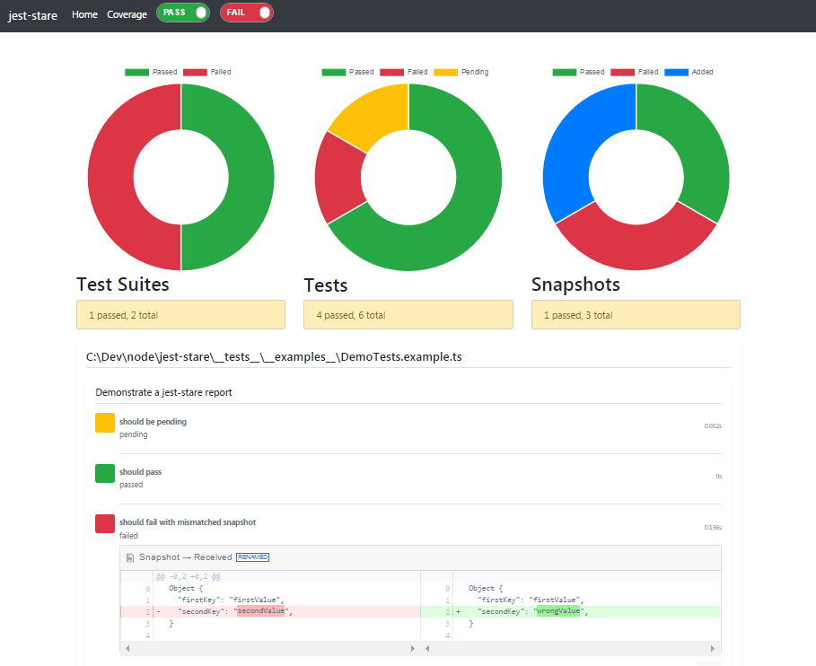

Jest

jest 是 Facebook 的一套开源的 JavaScript 测试框架， 它自动集成了断言、JSDom、覆盖率报告等开发者所需要的所有测试工具，是一款几乎零配置的测试框架。并且它对同样是 Facebook 的开源前端框架 React 的测试十分友好。
?> 单元测试特指被测试对象为程序中最小组成单元的测试。这里的最小组成单元可以是一个函数、一个类等等。
安装 Jest
初始化 package.json
在 commad 中输入以下命令，初始化前端项目并生成 package.json：
npm init -y
安装 Jest 及相关依赖
在 commad 中中输入以下命令，安装测试所需要的依赖：
cnpm install jest babel-jest @babel/core babel-core@^7.0.0-bridge.0 @babel/preset-env --save-dev
babel-jest、@babel/core、 @babel/preset-env、这几个依赖是为了让我们可以使用 ES6 的语法特性进行单元测试，ES6 提供的 import 来导入模块的方式，Jest 本身是不支持的。
添加.babelrc 文件
在项目的根目录下添加.babelrc 文件，并在文件复制如下内容:
{
"presets": ["@babel/preset-env"],
"env": {
"test": {
"presets": [["@babel/env"]]
}
}
}
修改 package.json 中的 test 脚本
打开 package.json 文件，将 script 下的 test 的值修改为 jest：
"scripts": {
"test": "jest"
}
编写 Jest 测试
- 创建 src 和 test 目录及相关文件
- 在项目根目录下创建 src 目录，并在 src 目录下添加 index.js 文件
- 在项目根目录下创建 test 目录，并在 test 目录下创建 index.test.js 文件
- Jest 会自动找到项目中所有使用.spec.js 或.test.js 文件命名的测试文件并执行，通常我们在编写测试文件时遵循的命名规范：测试文件的文件名 = 被测试模块名 + .test.js，例如被测试模块为 index.js，那么对应的测试文件命名为 index.test.js。
- 在 src/index.js 中创建被测试的模块
export default {
sum(a, b) {
return a + b;
}
};
在 test/index.test.js 文件中创建测试用例
import index from '../src/index';
test('sum(2 + 2) 等于 4', () => {
expect(index.sum(2, 2)).toBe(4);
});
运行 npm run test, Jest 会在 command 中打印出以下消息：
> jest
PASS test/index.test.js
✓ sum(2+2) 等于4 (5ms)
Test Suites: 1 passed, 1 total
Tests: 1 passed, 1 total
Snapshots: 0 total
Time: 2.357s
Ran all test suites.
测试 peimise
test('返回结果{success:true}',()=>{
return except(fetchApi()).resoloves.toMatchObject({
data:{
success:true
}
})
})
test('返回结果404',()=>{
return except(fetchApi()).rejects.toThorw())
})
test('返回结果404',()=>{
except.assertions(1);
return except(fetchApi()).catch((e)=>{
except(e.toString()).toEqual('Error: request failed width status code 404')
})
})
test('返回结果404',async()=>{
except.assertions(1);//至少执行一次
try{
await fetchApi();
}catche(e){
except(e.toString()).toEqual('Error: request failed width status code 404')
}
})
test('返回结果404',async()=>{
let e=await fetchApi();
return except(e.toString()).toEqual('Error: request failed width status code 404')
})
done
import asyncfun from './asyncfun.js';
test('asyncfun',()=>{
asyncfun((done)=>{
except(2).tobe(1)
done();
})
})
advanceTimersByTime
import asyncfun from './asyncfun.js';
jest.useFakeTimes();
test('测试',()=>{
const func=jest.fu();
asyncfun(func);
jest.advanceTimersByTime(3000);
expect(fun).toHaveBeenCalledTimes(1);
jest.advanceTimersByTime(3000);
expect(fun).toHaveBeenCalledTimes(2);
})
runOnlyPendingTimers
import asyncfun from './asyncfun.js';
jest.useFakeTimes();
test('测试',()=>{
const func=jest.fu();
asyncfun(func);
jest.runOnlyPendingTimers();
expect(fun).toHaveBeenCalledTimes(1);
})
runCallBack
import asyncfun from './asyncfun.js';
test('测试。',()=>{
const func=jest.fu();
asyncfun(func);
asyncfun(func);
asyncfun(func);
expect(fun.mock.calls.length).toBe(3);
})
jest.config.js
新建 jest.config.js 并添加配置项 module.exports = { 配置项 } 执行 init 生成配置文件
npx jest --init
配置项
testMatch:设置识别哪些文件是测试文件（glob 形式），与 testRegex 互斥，不能同时写
testMatch: ['**/__tests__/**/*.js?(x)', '**/?(*.)(spec|test).js?(x)'];
testRegex:设置识别哪些文件是测试文件（正则形式），与 testMatch 互斥，不能同时写
testRegex: '(/__tests__).*|(\\\\.|/)(test|spec))\\\\.jsx?$';
testRnviroment:测试环境，默认值是：jsdom，可修改为 node
testEnvironment: 'jsdom';
rootDir:默认值：当前目录，一般是 package.json 所在的目录
rootDir: ' ';
moduleFileExtensions:测试文件的类型
moduleFileExtensions: ['js', 'json', 'jsx', 'node'];
coverageThreshold: { //测试覆盖率, 阈值不满足，就返回测试失败
global: {
branches: 90,
functions: 90,
lines: 90,
statements: 90,
},
- cacheDirectory: './node_modules/.cache', //测试缓存数据的存储位置
- setupFiles：配置文件，在运行测试案例代码之前，Jest 会先运行这里的配置文件来初始化指定的测试环境
- testPathIgnorePatterns：用正则来匹配不用测试的文件
- collectCoverage：是否生成测试覆盖报告，如果开启，会增加测试的时间
- collectCoverageFrom：生成测试覆盖报告是检测的覆盖文件
- coveragePathIgnorePatterns : 该路径下的测试，忽略在测试覆盖率上
- moduleNameMapper：配置别名，代表需要被 Mock 的资源名称
- transform：用 babel-jest 来编译文件，生成 ES6/7 的语法,
- modulePaths ：测试路径
- transformIgnorePatterns： //测试过程不改变满足配置的文件
配置方式
// jest.config.js
module.exports = {
testMatch: ['<rootDir>/test/**/*.js'],
testEnvironment: 'jsdom',
rootDir: '',
moduleFileExtensions: ['js', 'json', 'jsx', 'node']
};
语法
- 分组（Test Group）：descripe(描述语,function)
- 测试用例（Test Case）：test(描述语,function)
- 测试用例（Test Case）：test.only(描述语,function) 仅仅执行当前测试用例
- 断言（Assert）：expect(运行需测试的方法并返回实际结果).toBe(预期结果)
- .expect() :期望 expect (2 + 2) 返回一个"期望"的对象
- .toBe(): 是匹配器
- .not 修饰符允许你测试结果不等于某个值的情况
- .toEqual() 匹配器会递归的检查对象所有属性和属性值是否相等，所以如果要进行应用类型的比较时，请使用.toEqual 匹配器而不是.toBe。
- .toHaveLength 可以很方便的用来测试字符串和数组类型的长度是否满足预期。
- .toThorw 可能够让我们测试被测试方法是否按照预期抛出异常，但是在使用时需要注意的是：我们必须使用一个函数将将被测试的函数做一个包装，正如上面 getIntArrayWrapFn 所做的那样，否则会因为函数抛出导致该断言失败。
- .toMatch 传入一个正则表达式，它允许我们用来进行字符串类型的正则匹配。
- assertions（1）代表的是在当前的测试中至少有一个断言是被调用的，否则判定为失败
expect({a:1}).toBe({a:1})//判断两个对象是否相等
expect(1).not.toBe(2)//判断不等
expect(n).toBeNull(); //判断是否为null
expect(n).toBeUndefined(); //判断是否为undefined
expect(n).toBeDefined(); //判断结果与toBeUndefined相反
expect(n).toBeTruthy(); //判断结果为true
expect(n).toBeFalsy(); //判断结果为false
expect(value).toBeGreaterThan(3); //大于3
expect(value).toBeGreaterThanOrEqual(3.5); //大于等于3.5
expect(value).toBeLessThan(5); //小于5
expect(value).toBeLessThanOrEqual(4.5); //小于等于4.5
expect(value).toBeCloseTo(0.3); // 浮点数判断相等
expect('Christoph').toMatch(/stop/); //正则表达式判断
expect(['one','two']).toContain('one'); //是否包含对应的值，括号里写上数组、字符串
expect(compileAndroidCode).toThrow(); //抛错误
toBeInstanceOf(class)：判断是不是class的实例
anything(value)：匹配除了null和undefined以外的所有值
toHaveBeenCalled()：用来判断mock function是否被调用过
toHaveBeenCalledTimes(number)：用来判断mock function被调用的次数
extend(matchers)：自定义一些断言
生命周期：
- afterAll(fn, timeout): 当前文件中的所有测试执行完成后执行 fn, 如果 fn 是 promise，jest 会等待 timeout 毫秒，默认 5000
- afterEach(fn, timeout): 每个 test 执行完后执行 fn，timeout 含义同上
- beforeAll(fn, timeout): 同 afterAll，不同之处在于在所有测试开始前执行
- beforeEach(fn, timeout): 同 afterEach，不同之处在于在每个测试开始前执行
jest 对象
- jest.fn(implementation)：返回一个全新没有使用过的 mock function，这个 function 在被调用的时候会记录很多和函数调用有关的信息
- jest.mock(moduleName, factory, options)：用来 mock 一些模块或者文件
- jest.spyOn(object, methodName)：返回一个 mock function，和 jest.fn 相似，但是能够追踪 object[methodName]的调用信息，类似 Sinon
测试覆盖率
Jest 内置了测试覆盖率工具 istanbul，要开启，可以直接在命令中添加 --coverage 参数，或者在 package.json 文件进行更详细的配置
jest --coverage
jest-stare 测试报告
jest-stare: jest 测试结果生成 html 或者 json 格式测试报告

在 package.json 文件，添加配置：
{
"scripts": {
"test-reportone": "jest --testResultsProcessor=jest-stare "
},
"jest-stare": {
"resultDir": "testreport/report",
"resultJson": "data.json",
"resultHtml": "index.html",
"coverageLink": "../lcov-report/index.html"
}
}
参数
- resultDir：设置生成结果目录
- resultJson：指示原始 JSON 结果文件名
- resultHtml：表示根 html 文件名
- log：指定 jest-stare 是否应该登录到控制台
- jestStareConfigJson： 请求保存 jest-stare 配置原始 JSON 结果的文件名
- report ：boolean 设置为 false 以禁止生成 HTML 报告（仅保留 JSON）
- coverageLink ：链接到覆盖率报告（如果有）
- disableCharts： 隐藏 HTML 报告中的圆环图
- hideFailing ：在页面加载时隐藏报告中的失败测试
调试 JEST 测试
要调试(debug)一个 Jest 测试，比如说"index.test.js"，我们需要使用如下的 node 指令来实现：
node debug --harmony .\node_modules\jest-cli\bin\jest.js --runInBand myView-test.js
- "node debug"将会启动 node 自带的调试器。"debug"会调用一个 V8 引擎调试器的 wrapper。这个 wrapper 提供了一系列的指令，用于在代码中跳进跳出和跟踪，而这些指令都不会出现在 V8 的"node -debug"中。（我承认它们看起来很相似，一个"-"符号之差）
- "-harmony"标志是为了让 Jest 正确地运行。
- ".\node_modules\jest-cli\bin\jest.js"就是 Jest 的入口。这个文件会在我调用"\node_modules.bin"里的"Jest"时被调用。
- "-runInBand"告诉 Jest 在当前的进程中运行所有测试，而不是再启动一个进程。Jest 默认就会启动多个进程并行的运行测试。如下为源码中关于这个选项的描述的片段（在.\node_modules\jest-cli\bin\jest.js 中）
- "--watchall"
- --bail 或： -b. 只要一有测试不通过，立马退出测试套件。
- --cache 是否使用缓存。 默认值为 true。 使用 --no-cache 来禁止缓存。 注意︰ 仅在遇到缓存相关的问题时禁用缓存。 一般来说，禁用缓存会令 Jest 运行至少慢两倍。
- --debug 显示出你 Jest 配置的调试信息
- --expand 别名︰ -e。使用该参数来对比完整的差异和错误，而非修复。
- --forceExit 强制 Jest 在所有测试运行完后退出。 对于一些由测试所生成但无法充分清理的资源来说，这是很有用的。 注意︰ 此功能是 escape-hatch。 如果 Jest 在测试运行最后没有退出，那就意味着外部资源还是被占用，又或是计时器还尚在你的代码中待令。 为了确保 Jest 可以完全关闭，建议你在每个测试后都关闭用到的外部资源。
- --lastCommit 将运行在上次提交文件更改后的所有测试。
- --showConfig 输出 Jest 配置，然后退出。
- --watchman 是否使用 watchman 进行文件抓取。默认值为 true。使用--no-watchman 来禁用。
- --watchAll 监视文件的更改并在任何更改时重新运行所有测试。若果你是想要重新运行仅基于已更改文件的测试，那么请使用 --watch 选项。
- --watch 监视文件更改，并重新运行与已更改的文件相关的测试。当文件发生更改时，如果你想要重新运行所有测试，可以使用 --watchAll 选项。
- --verbose 层次显示测试套件中每个测试的结果。
- --useStderr 转移所有输出到 stderr(标准错误输出).
- --updateSnapshot 或: -u. 在运行测试中使用这个参数来重新录制每个失败测试的快照。 还可以和测试套件模式或 --testNamePattern 一起使用，从而重新录制的快照。
- --silent 阻止所有测试通过控制台输出信息。
- --notify 激活测试结果通知。特别是当你不想专心致志等待 JavaScript 测试结果时。
- --onlyChanged 或: -o. 尝试确定根据当前存储库中哪些已经更改的文件来运行的测试。 只有在此刻 git/hg 存储库中运行测试，需要静态依赖关系图时有用（例如. 无动态要求）。
- --noStackTrace 禁止栈跟踪信息在测试结果输出中。
- --logHeapUsage 记录每个测试后的记录堆使用情况。 主要用来调试内存泄漏。 与 --runInBand 和 --expose-gc 一起使用.
"index.test.js"就是我们想要 debug 的测试文件。像这样使用相对路径是没有问题的，因为 Jest 会把它转换为一段正则表达式。
cont, c - 继续执行
next, n - 跳到下一步
step, s - 跳进
out, o - 跳出
pause - 暂停执行的代码 (就像开发工具中的暂停按钮)
setBreakpoint(), sb() - 在当前行设置断点
setBreakpoint(line), sb(line) - 特定行设置断点
setBreakpoint('fn()'), sb(...) - 在函数体内的第一段声明中设置断点
setBreakpoint('script.js', 1), sb(...) - 在script.js的第一行设置断点
clearBreakpoint, cb(...) - 清楚断点
backtrace, bt - 打印当前执行帧的回溯
list(5) - 列出脚本源代码的5行内容（前面和后面5行）
watch(expr) - 向观察列表中添加表达式
unwatch(expr) - 去掉观察列表中的表达式
watchers - 列出所有的watcher以及它们的值（在每段断点处自动列出）
repl - 在调试脚本的内容时打开调试器的repl用于评估
run - 运行脚本（在调试开始时自动运行）
restart - 重启脚本
kill - 结束脚本